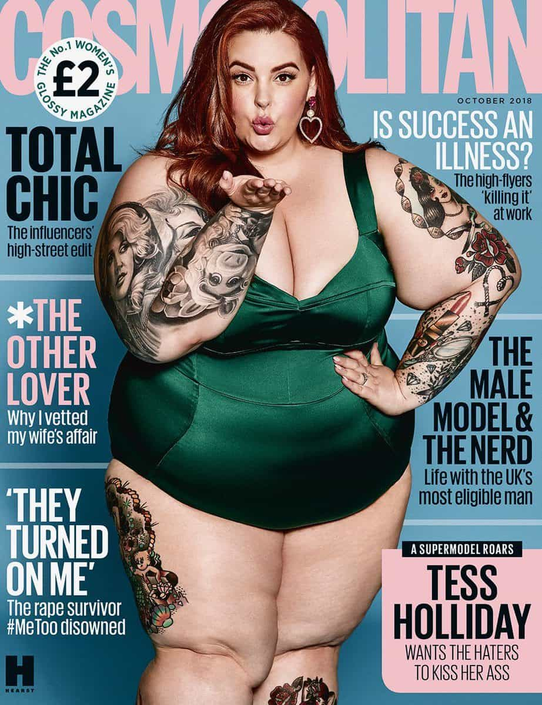

Daryush "Roosh" Valizadeh created ROK in October 2012. You can visit his blog at RooshV.com or follow him on Twitter and Facebook.


The following is an excerpt from the first chapter of my new book Game. Click here for full details.
Game is a collection of beliefs, behaviors, strategies, and tactics that make women more attracted to you while increasing your likelihood of experiencing intimacy. It’s often based on cold approaching, an active strategy where you walk up to a girl you don’t know and present yourself in the best way possible so that she decides, at some point, to have sex with you. Game can also be used on girls within your social circle, a more passive strategy where you have to be less aggressive, because a hard rejection may lower your status within the group. It doesn’t matter if you are rejected a dozen times a day when cold approaching, because you probably won’t ever see those girls again, but within a specific social circle it’s best not to work on more than one or two girls at the same time to keep conflict and drama at bay.
The popular misconception about game is that it’s simply a collection of pick-up lines where you walk up to a girl and say something cheesy while wearing an outlandish hat. Not only is it more strategic than that, but game has evolved into a more holistic program of changing your appearance, behavior, and living habits. I remember the days when boldly approaching a girl was enough for her to think you were confident and attractive, but now that girls are approached so frequently, how bold is she going to think you are when you’re the third guy to speak to her that day? As time passes, higher levels of game are required to accomplish the same result.
Back in 2002, the game I needed consisted of rubbing my crotch against a girl’s ass while dancing, asking “What is your name?” after a few songs, having a short, banal conversation before resuming crotch-on-ass dancing, and eventually getting her number. Not only is that type of game insufficient today, but it may get you kicked out of the nightclub.
When I got a girl on a date, I would use the “roller coaster” routine that I found on the internet. I’d tell her about the experience of going on a wild roller-coaster ride, up and down, up and down, and how thrilling and exciting the ride was, and how I wanted to go on this ride again and again. The goal of this sexual metaphor was to make the girl horny, and although I’m not sure if it ever did, I never received a bad response. If I tried this routine today, the girl would stare at her iPhone before announcing that she has to leave.
I used countless other awkward moves successfully, but now girls expect much more. If you’re living in a hyper-competitive city that has as many men as women, your game has to be above average just to pull a cute girl, and once you find an effective game strategy, you’ll continually have to improve it so that the tens of thousands of men who are working on their game don’t surpass you.
On the surface, it seems crazy that a man has to put in massive amounts of work in order to have sex with the women he wants, but men who don’t use game, who toil in jobs or businesses to accumulate money and fancy cars in order to impress women, are doing the same thing. They’re just relying on “provider” game that used to work before women made their own money or had a wide choice of who to date. Because having a good job or car is no longer a reliable way to secure the affections of a pretty girl, a more direct method in the form of modern game was developed, which has a far higher return on investment than trying to impress a girl with your career or material possessions.
All around you, men are working hard to get sex, from learning game, opening bars, incurring massive debt to appear rich, or trying to become famous. I’m in my late thirties and can go an entire day without thinking about sex, but I remember when I was in my twenties and couldn’t go an hour. I won’t ever shame a man for moving mountains in order to get laid, because I know that when your hormones are at their peak, you don’t want to hear rational explanations or embrace Buddhist ideas about not desiring pleasure. You want sex and you want it now. My job is to help you meet that need in the healthiest way possible while preventing it from ruining your life.
The bad news is that it was easier to help you move that mountain years ago when few men were game-aware and only a small percentage of the female population were lesbians, morbidly obese, or green-haired man-haters. There are more men eager for sex with attractive girls than there are attractive girls. This crisis of supply and demand means you will have to work harder to get even less than I did when I was running game full time in the early 2000s, and young boys today will face an even greater struggle than you when they grow up and become men.

I fondly remember one of my first successful nightclub pick-ups back in 2001. It was my third or so visit to the club after graduating from college. I had no idea what I was doing, but I wanted sex badly. I tried my crotch-on-ass dancing move and it worked on a cute Filipino virgin. She gave me her number and I called her. I managed to get her out on a date where I essentially rehearsed memorized routines I had read on the internet. I guess they worked because she allowed me to kiss her. On the second date, I invited her to my apartment. She put up heavy resistance when I tried to take off her clothes, so I did the first thing that came into my mind: I put on a VHS tape of hardcore pornography. It didn’t work at getting off her clothes. Do you know what I did next? I gave up! I just stopped calling her because I didn’t know what else to do.
It’s a miracle that I got as far as I did, and I wonder whether today an attractive Filipino girl of her age would respond to my moves in the same way as the virgin did more than fifteen years ago. Chances are she’d have over 1,000 thirsty male followers on Instagram and get approached in the club by guys who have a more refined technique than my crotch-on-ass move. Back then, the Filipino girl didn’t have many options, so my awkward self was enough to get her out on a date, but today she could pick and choose from a greater supply of men.
A low level of game used to get you dates with attractive women, but advances in technology—particularly the invention of the smartphone—have turned game into an arms race, where every year the level of game that women expect rises in tandem with their options. I experienced this directly in Toronto when I visited in 2013. From the girls I talked to, I noticed that I was being evaluated on every joke I told. They would actually complain if a joke wasn’t great, and suggest that I was “losing” them because of it. Instead of wanting to connect with men, the girls acted like they were attending a comedy show, eggs in hand, ready to throw them at the comedian if he didn’t make them laugh hard enough. It’s no surprise that a substantial percentage of my readers come from the Toronto area.
Another reason for the game arms race is the existence of teachers like me. My websites and books are training a large number of men to use game. The more men who know how to use game, the harder things get for every man, because the standard of game that women expect rises. Fortunately, I’m finding that game is becoming less popular than before. The younger generation of men is becoming lazier and softer than men of previous generations, mostly because they are addicted to video games, porn, estrogenic soy products, or social networking. This tells me that the technology which allows women to have more dating options is a far greater contributor to the need for higher levels of game than the availability of game knowledge alone.
Whatever the reason for the game arms race, the reality is that you have to become like a doctor who must keep up with the latest medical advances to try improved treatments on your “patients.” Thankfully, once you have a basic foundation of game, it’s quite simple to maintain it at an optimal level, and by then it’s likely that you’ll have discovered a niche or two that reduces the amount of work you have to do.
An additional factor that makes game necessary is that the ratio of men compared to women in the population is far higher compared with the past, when frequent wars killed men almost exclusively. Although I do not wish for a huge war to make my sex life easier, the period of peace and stability we’re living in is one of the factors that led to the creation of game in the first place. If there were two women for every one able-bodied man, a book like this wouldn’t even be necessary. Instead, women would need books on how to compete for the few available men.
Game ends up becoming a scavenger strategy in any environment where there is a decreasing supply of quality females who have unlimited choice on who to date. It works in any society with loose sexual norms and declining birth rates, factors that signify the breakdown of the family unit and the promotion of “free love,” where people have sex just for fun. There is a reason that my books don’t sell well in countries with high birth rates, such as those in Africa, or where the traditional family is strong, such as those in the Middle East.
The more fractured a society is, the greater the opportunity for game tactics to be useful for men who desire sexual relationships, as long as they continually upgrade their game or find niches that enable them to achieve consistent results among a fickle and bored female population.
The above excerpt was taken from my new book Game. It has been released on paperback, e-book, audiobook, and Kindle. Click here for full details.
Read Next: First Look At My New Book “Game”